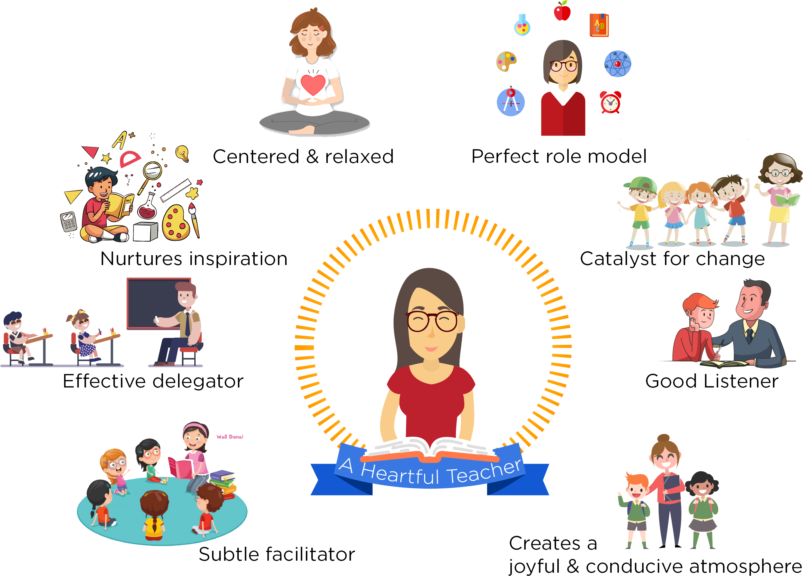
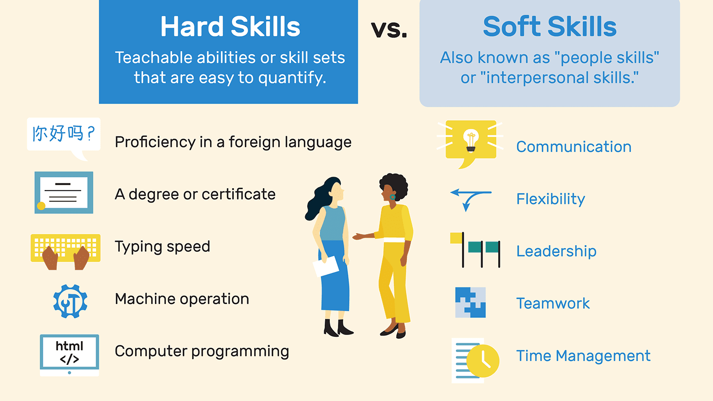
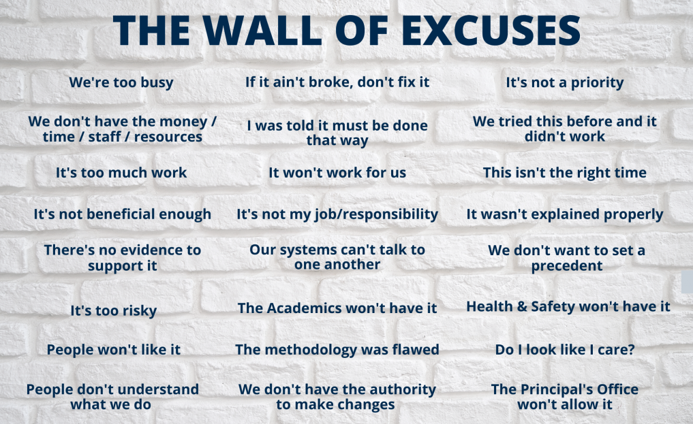

Session Details
- Date: 4th September 2020
- Topic: Orientations as a Teacher in Higher Education
- Resource Person: Dr. Chalinda K. Beneragama
4. Orientations as a Teacher in Higher Education
Topics covered in this session
- History of Education in SL
- Who is a Teacher?
- Responsibilities of a Teacher
- Personality Characteristics
- Hard Skills and Soft Skills
- Soft Skills for Academics
- 21st Century Skills
- Academic Ethics, Responsibility, and Accountability
What is the Role of a Teacher?
The role of a teacher is to inspire, motivate, encourage, and educate learners. Learners can be of any age and from any background. However, for the purposes of this guide, teachers refer to those who educate young people of school age (roughly 4-18)
The Duties of a Teacher
- Teaching students based on national curriculum guidelines within your specialist subject areas
- Planning, preparing and delivering lessons
- Encouraging student participation in lessons and in other school-related activities
- Supporting the leadership team to implement the school’s development plan
- Assessing and reporting on the behaviour of students
- Providing educational and social guidance to students and/or signposting them to specialist areas of advice when needed
- Ensuring the highest standards of quality and applying the most up-to-date teaching methods
- Taking part in opportunities to boost your own learning and continuous professional development (CPD)
- Attending and taking part in staff meetings to support the smooth running and administration of the school
Good Teachers are;
- Strong Communicators
- Listen Well
- Focus on Collaboration
- Adaptable
- Engaging
- Show Empathy
- Have Patience
- Value Real-World Learning
- Share Best Practices
- Lifelong Learners

Hard Skills
Hard skills, or technical skills, are specific abilities that are assessed and developed through the teaching of well-defined sets of competencies. These competencies provide educators with a quantifiable component from which they can easily measure student proficiency in order to identify areas of developmental need
- Proficiency in a foreign language
- A degree or certificate
- Typing speed
- Machine operation
- Computer programming
Soft Skills
Soft skills span personal attributes that are non-technical in nature. They reflect important interpersonal and decision-making capabilities that facilitate learning and performance. Examples of soft skills include communication, organizational, and leadership skills
- Communication
- Leadership
- Motivation
- Patience
- Persuasion
- Problem solving abilities
- Teamwork
- Time management

Key Differences of Responsibility vs Accountability
| Responsibility in the Workplace | Accountability in the Workplace |
|---|---|
| The duty to complete tasks; not doing so is a failure of responsibility | The duty to give an account of tasks after they are completed |
| Ongoing while final goal is being worked towards | Happens after a situation occurs ( or in the form of status update) |
| Can be shared among a team; many people can have the same task, or different tasks that work towards the same goal | Should be assigned to just one person to avoid thinking someone else will be doing the job |
| Specifically, task-focused | Specifically results-focused |
| Cannot be assigned to someone. Each person must take responsibility on their own (more behavioural) | Is assigned (ideally to one person) – they are held accountable for results and potential consequences of not reaching desired results |
Responsibility can be shared. You can work with a team of people to divide responsibilities. On the other hand, accountability is something that can be specific to an individual depending on their skill set, role, or strengths.
Responsibility is task oriented. Every person on a team may be responsible for a given task that is required to complete a massive project. Accountability is what happens after a situation has occurred. It is how you respond and take ownership over the results. Even during the most uncertain times, true leaders hold themselves accountable for the results.
Responsibility focuses on defined roles, job descriptions, and processes that must be in place to achieve a goal. On the contrary, accountability is committed to the successful completion of tasks assigned to you and being willing to take responsibility for everything that happens as a result of the actions that were taken.
